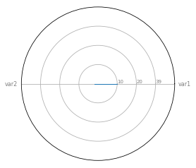

Radar Chart Simple
import matplotlib.pyplot as plt
import pandas as pd
from math import pidf = pd.DataFrame({
'group' : ['A', 'B', 'C', 'D'],
'var1' : [10, 20, 30, 4],
'var2' : [2, 88, 22, 2]
})df| group | var1 | var2 | |
|---|---|---|---|
| 0 | A | 10 | 2 |
| 1 | B | 20 | 88 |
| 2 | C | 30 | 22 |
| 3 | D | 4 | 2 |
# number of variable
categories = list(df)[1:]
N = len(categories)# Assign values
values = df.loc[0].drop('group').values.flatten().tolist()
values += values[:1]
values[10, 2, 10]
angles = [n / float(N) * 2* pi for n in range(N)]
angles += angles[:1]angles[0.0, 3.141592653589793, 0.0]
# Initiliaze Spider plot
ax = plt.subplot(111, polar=True)
plt.xticks(angles[:-1], categories, color='grey', size=8)
ax.set_rlabel_position(0)
plt.yticks([10, 20, 30], ["10", "20", "39"], color="grey", size=7)
plt.ylim(0, 40)
# Plot data
ax.plot(angles, values, linewidth=1, linestyle='solid')
ax.fill(angles, values, 'b', alpha=0.1)[<matplotlib.patches.Polygon at 0x119d7f710>]
